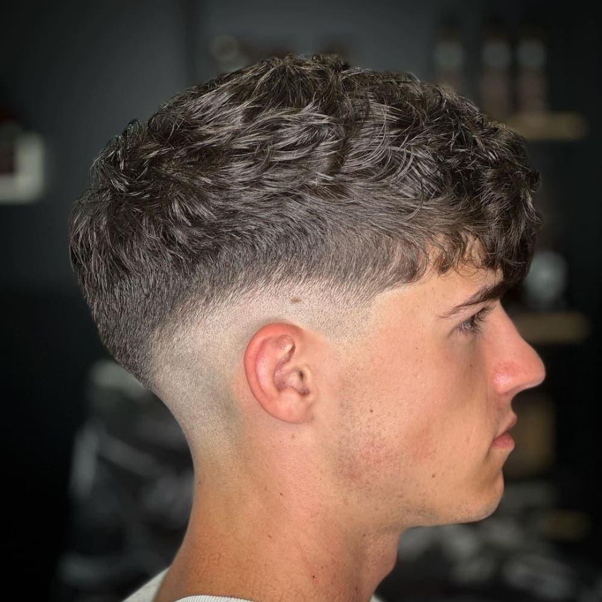
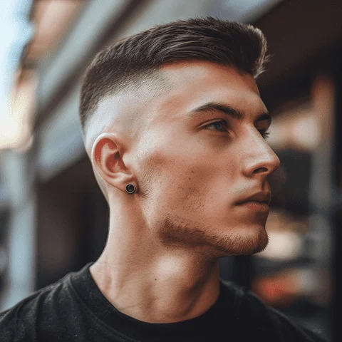

Mi az a fade és miért ilyen népszerű?
A fade egy hajvágási technika, amelynél az oldalak és a tarkó fokozatosan rövidül – a hosszabb tetőrésztől egészen a teljesen rövidre vagy bőrig vágott részig. Az átmenet lehet éles vagy lágy, és ez az egyik legfontosabb különbség az egyes fade típusok között.
A fade azért lett ennyire elterjedt a barber shopokban, mert rendkívül sokoldalú. Szinte bármilyen tetőrésszel kombinálható – textured crop, pompadour, buzz cut, vagy akár hosszabb, laza stílussal is. Ráadásul az arcformától és a hajtípustól függően mindig meg lehet találni azt a változatot, amelyik a legelőnyösebb.
Budapesten – és különösen a belső kerületek barber shopjaiban – a skin fade az elmúlt néhány évben a legtöbbet kért hajvágások egyikévé vált. Nem véletlen: tiszta, rendezett megjelenést ad, és lassabban nő ki, mint egy hagyományos oldalsó vágás.
A fade típusok – skin, mid, high és zero fade
A fade típusok között a fő különbség az, hogy hol kezdődik az átmenet az oldalon. Ez egyetlen szempont, mégis alapvetően meghatározza az egész frizura összhatását.
Skin fade
Az oldalt teljesen bőrig vágják – innen a neve. Az átmenet a bőrtől a hosszabb tetőrészig terjed, és lehet alacsony, közepes vagy magas elhelyezkedésű.
- Éles, drámai megjelenés
- Kerek és ovális archoz ideális
- Hetente karbantartást igényel
- A legtöbb modern stílussal kombinálható
Mid fade
Az átmenet a fül magasságában kezdődik – se nem túl alacsonyan, se nem túl magasan. Ez a legsokoldalúbb és leggyakrabban kért változat.
- Kiegyensúlyozott, tiszta megjelenés
- Szinte minden arcformához jól áll
- Könnyű karbantartani
- Klassz és textured stílusokhoz egyaránt jó
High fade
Az átmenet magasan, a fül felett kezdődik – ez adja a legdrámaibb kontrasztot a tetőrész és az oldalak között.
- Erős, karakteres megjelenés
- Kerek arcnál megnyújtja az arcot
- Pompadour és quiff stílusokkal jól mutat
- Hetente karbantartást igényel
Zero fade
A zero fade esetén a gép legkisebb fokozatával – nullás fejjel – vágják az oldalt, ami nagyon rövid, de nem teljesen bőrig vágott hatást ad.
- Természetesebb, mint a skin fade
- Kevésbé éles átmenet
- Hosszabb ideig tartja a formáját
- Klasszikus barber stílusokhoz ideális

Melyik fade típust válaszd?
A választás nem csak ízlés kérdése – az arcforma, a hajsűrűség és az életstílus mind befolyásolják, hogy melyik fade típus lesz a legelőnyösebb és a legpraktikusabb számodra.
- Kerek arc + high skin fade: megnyújtja az arcot, szűkíti az oldalakat – az egyik legelőnyösebb kombináció
- Szögletes arc + mid fade: lágyabb átmenet, nem hangsúlyozza az éles állkapocsvonalat
- Ovális arc + bármelyik fade: az ovális arcforma a leguniverzálisabb, szinte minden változat jól mutat
- Hosszúkás arc + low fade: nem növeli tovább az arc látszólagos magasságát
- Sűrű haj + skin fade: a nagy tömeg ellenére tiszta, rendezett hatást ad
- Ritka haj + taper fade: lágyabb átmenet, kevésbé hangsúlyozza a ritkább részeket

Karbantartás – mennyire nő ki a fade?
Az egyik leggyakoribb kérdés a fade kapcsán: milyen gyorsan nő ki? A válasz az, hogy gyorsabban, mint egy hagyományos vágás. A haj növekedési üteme általában havi 1–1,5 cm körül van, de a fade esetén már néhány hét után érezhetően elmosódik az átmenet.
Skin fade és high fade esetén a legtöbb vendég 2–4 hetente jár frissítésre, hogy az átmenet mindig éles maradjon. Mid fade és zero fade esetén ez 3–5 hétre is kitolható, hiszen az átmenet természetesebben simul bele a növekedésbe.
- Skin fade: 2–3 hetente érdemes frissíttetni
- High fade: 2–4 hét, az átmenet magassága miatt hamarabb látszik a növekedés
- Mid fade: 3–5 hét, a legtartósabb fade típus
- Zero fade: 3–5 hét, természetesen nő ki, kevésbé feltűnő az elmosódás
A Bosphorus barber shopban lehetőség van gyors "frissítő" látogatásra is – nem kell mindig teljes hajvágást kérni, ha csak az átmenetet kell rendbe tenni.
Kérd a fade-et egy profi barbernél
Skin fade, mid fade, high fade vagy zero fade – a Bosphorus barber shopban minden változatot precízen kivitelezünk. Foglalj most, és mondd el, mit szeretnél: a borbély segít megtalálni a számodra legelőnyösebb megoldást.